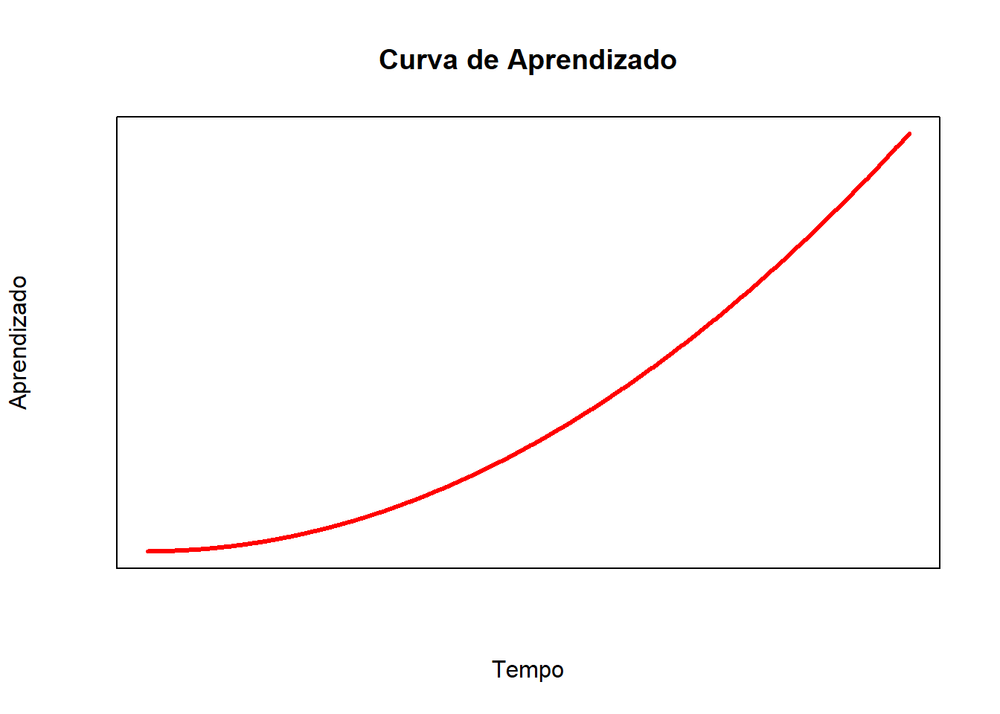
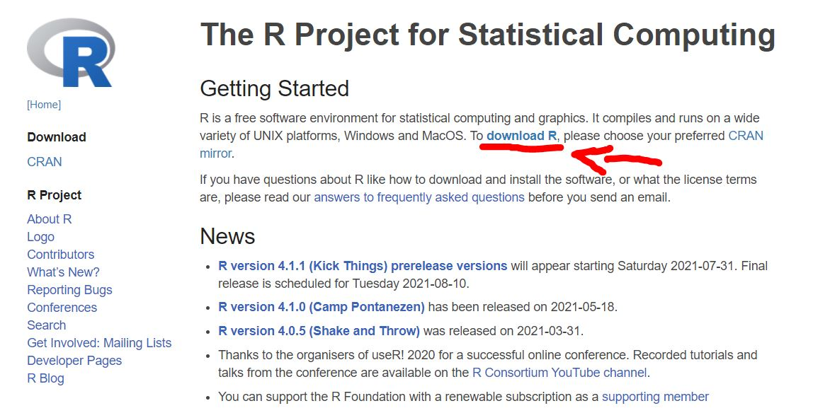
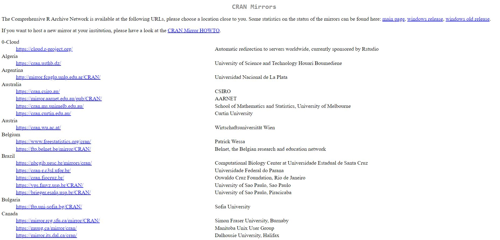
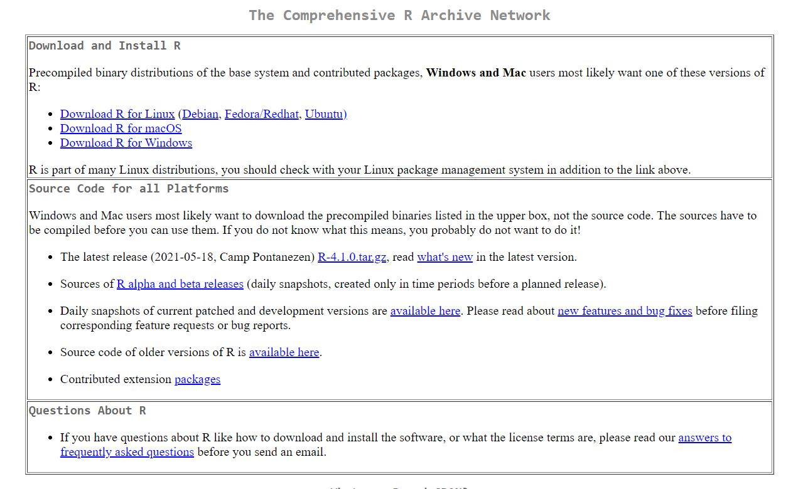
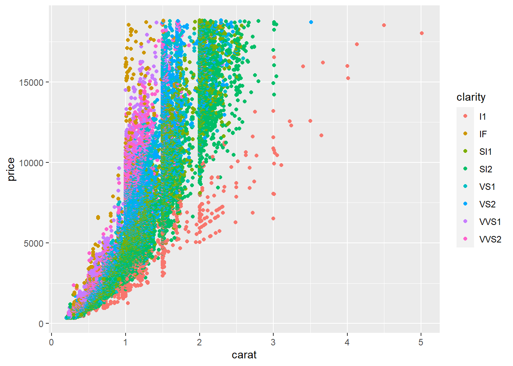
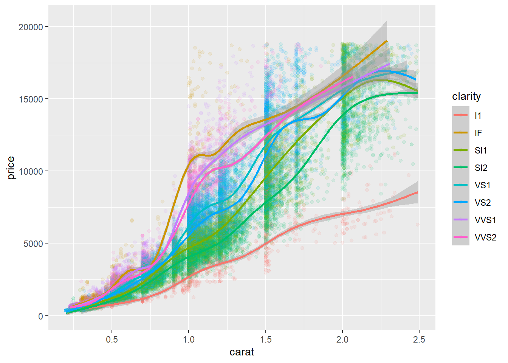
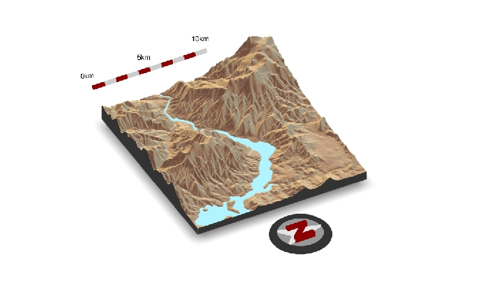
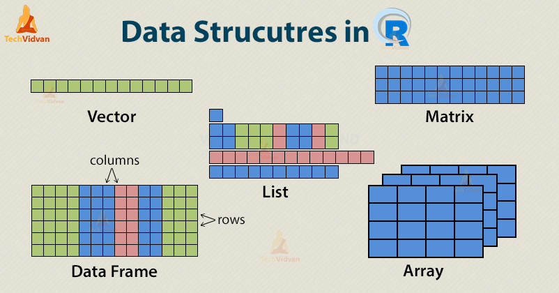

Capítulo 2 Vamos ao que interesa
2.1 Conhecendo o R
2.1.1 O que é o R?
É uma linguagem de programação voltada para resolução de problemas estatísticos, tratamento e visualização de dados.
Para Peng (2020) essa resposta é simples, “R é um dialeto do S.”
De acordo com Perlin (2018) O código base do R foi inicialmente criado no laboratório da Bell/ AT& T por John Chambers e seus colegas, com base na linguagem S. Esse código foi reaproveitado por dois acadêmicos, Ross Ihaka e Robert Gentleman, resultando na plataforma de programação que temos hoje. Para os curiosos, o nome R foi escolhido devido ao compartilhamento da primeira letra do nome de seus criadores.

O R está em constante desenvolvimento por um grupo chamado R Team Core e conta com colaboração gratuita de centenas de milhares de usuários e desenvolvedores ao redor do mundo. Por isso, atualmente o R é utilizado por diversas áreas do conhecimento variando das ciências humanas até exatas, naquelas ciências que poderíamos imaginar pouco ou nada relacionadas. Por isso não se limite a procurar informações apenas no seu nicho, abra sua mente e busque aprender de outras ciências também. Eu, particularmente, busco muita coisa na econometria. Embora presente em todo tipo de livro sobre R, esta citação acima (Perlin (2018)) é de um livro de econometria. Veremos mais conteúdos desse material em breve.
R é um software livre de análise de dados (não só estatística) que funciona em diversos sistemas operacionais: GNU Linux, MicrosoftWindows, Mac OS X e outros.
O aprendizado do R é difícil no início devido à necessidade de se adaptar à sua lógica de funcionamento, se acostumar com a estrutura dos seus documentos de ajuda e memorizar alguns comandos básicos.
eq = function(x){x*x}
plot(eq(1:1000), type="l",lwd=3,col="red", xaxt="n", yaxt="n", xlab="Tempo", ylab="Aprendizado", main="Curva de Aprendizado")
É preciso bastante perseverança e motivação para aprender os comandos básicos, e disposição para ler as páginas de ajuda e os manuais. Entretanto, depois de um certo tempo, ele possibilita que se trabalhe com grande produtividade e, o que é mais importante, eficácia e independência.
Leia também sobre o mito da curva de aprendizado do R.
2.1.2 Instalação do R
O R é um software gratuito para análises estatísticas e além. Pode ser baixado de The R Project for Statistical Computing.
Clique em download R.

Escolha o “espelho”.Escolha o mais próximo de você.

Escolha o seu sistema operacional. Caso você seja usuário de windows clique em Download R for Windows em seguinda em install R for the first time e finalmente em Download R 4.1.0 for Windows. Veja que no momento que este tutorial foi feito a versão mais recente é a 4.1.0. No vídeo abaixo a versão é uma anterior, mas a lógica é a mesma.

Acesse o PVANet para assistir ao vídeo de instalação do R e RStudio no windows
Eu não tenho um sistema operacional de cada para mostrar a instalação, por isso deixo este vídeo para instalação no linux e este para instalação no mac. Caso você não consiga instalar me procure.
2.1.3 Primeiro contato
Temos 1 arquivo Cap_1_P2-Mispriced-Diamonds.csv com mais de 50.000 linhas referentes a transações de venda de diamantes dividida em 3 colunas clarity, carat e price. Quanto mais claro mais caro, certo? Ou há sub ou super valorização? Vamos investigar se essa relação é verdadeira.
Abaixo vamos apenas dar uma olhada no potencial de análise e produção gráfica do R. Não precisa se preocupar se não conseguir fazer tudo funcionar. Vamos aos poucos aprender cada comando aprensentado.
mydata<-read.csv("J:/ENG 792/ENG_792-AVDR/ENG.792-AVDR/Cap_1_P2-Mispriced-Diamonds.csv")
library("ggplot2")
ggplot(data=mydata, aes(x=carat, y=price))+
geom_point() Faz algum sentido. Mas está difícil de visualizar então vamos fazer um tratamento, vamos atribuir cores de acordo com a classificação do atributo clarity.
Faz algum sentido. Mas está difícil de visualizar então vamos fazer um tratamento, vamos atribuir cores de acordo com a classificação do atributo clarity.
ggplot(data=mydata, aes(x=carat, y=price, colour=clarity))+
geom_point() Os pontos estão sobrepostos impossibilitando a visualização. Vamos mexer na transparência.
ggplot(data=mydata,
aes(x=carat, y=price, colour=clarity))+
geom_point(alpha=0.1) 
Temos pontos que não são estatisticamente significantes à direita. Vamos nos livrar dos pontos não significativos, aqueles que são carat menores que 2.5.
Vamos também adicionar algumas linhas através dos dados para avaliar o comportamento das variáveis em conkunto.
brown é a melhor claridade, vejam que temos mispricing onde as linhas se cruzam.
ggplot(data=mydata[mydata$carat<2.5,],
aes(x=carat, y=price, colour=clarity))+
geom_point(alpha=0.1) +
geom_smooth()## `geom_smooth()` using method = 'gam' and formula 'y ~ s(x, bs = "cs")'
Vamos agora reproduzir um ourto exemplo muito legal do pacote rayshader.
Executando o código abaixo você produzirá uma Modelo Digital do Terreno em 3D em uma janela pop up.
library(rayrender)
library(rayshader)
library(magick)
#Vamos carregar o mapa com o pacote raster.
loadzip = tempfile()
download.file("https://tylermw.com/data/dem_01.tif.zip", loadzip)
localtif = raster::raster(unzip(loadzip, "dem_01.tif"))
unlink(loadzip)
# convertê-lo para matriz:
elmat = raster_to_matrix(localtif)
#Usar uma outra textura do rayshader
elmat %>%
sphere_shade(texture = "desert") %>%
add_water(detect_water(elmat), color = "desert") %>%
plot_3d(elmat, zscale = 10, fov = 0, theta = 60, zoom = 0.75, phi = 45, windowsize = c(1000, 800))Agora vamos adicionar mais algumas infromações como escala e indicador de norte.
render_scalebar(limits=c(0, 5, 10),label_unit = "km",position = "W", y=50,scale_length = c(0.33,1))
render_compass(position = "E")
Sys.sleep(0.2)
render_highquality(samples=200, scale_text_size = 24,clear=TRUE)
2.2 Como R funciona
Diferentemente de outras linguagens, todos os comandos escritos são diretamente executados, desta forma o R não precisa de um compilador para executar os comandos como Fortran. Por isso, torna-se uma linguagem muito mais amigável e acessível para não programadores.
A linguagem é muito intuitiva (quase uma sintaxe lógica). Por exemplo uma regressão linear pode ser executada como lm(x~y) ( lm vem de linear model). Como no exemplo do modelo linear acima, sempre que formos executar um comando temos que seguir da seguinte forma função(dados e demais ajustes ou parâmetros), ou seja chame a função e coloque o resto dentro de parênteses.
Tudo que é executado pelo R fica armazenado na memória ativa (RAM) do computador na forma de objetos que possuem um nome. Os objetos, que variam em tipos e estruturas, podem ser funções criadas pelo próprio usuário, dados criados ou importados de uma memória, expressões e etc. Antes de entrarmos em detalhes sobre funções ou expressões, vamos nos ater aos objetos enquanto tipo e, na sequência, suas estruturas.
Dica de livro de cabeceira sobre R Mello and Peternelli (2013).
Antes de avançarmos para os objetos é necessário fazer algumas recomendações e ressalvas.
Para criar um objeto qualquer podemos utilizar <- ou =. As boas práticas recomendam o uso de <- para evitar confusão já que o sinal = tem outras funções.
Um objeto é criado da seguinte forma nome_do_objeto <- atribuição.
## [1] "atribuição"Contudo, evitem nomes longos, que comecem com numerais ou caracteres especiais ou letras maiúsculas (R é case-sensitive). Caso sua linha de comando esetja ficando longa demais opte por quebrar a linha veremos isso mais adiante).
2.2.1 Tipos de objetos (mode ou type)
Os objetos no R podem ser do tipo lógico, inteiro, simples, dupla, complexo, função ou caractere.
| mode() | Armazenamento | Exemplo |
|---|---|---|
| logical | lógico | TRUE or FALSE |
| numeric | inteiro, simples ou dupla | Números 1, 3.14, 2e-308 etc |
| complex | complexo | 3+2i |
| function | função | Soma<-function(…) |
| name | caractere | média |
Tabela 1: Tipos de modos para objetos no R.
#logical
q1 <-T
mode(q1);typeof(q1)## [1] "logical"## [1] "logical"q2 <- FALSE #pode ser a palavra toda mas em maiúsculas
mode(q2);typeof(q2)## [1] "logical"## [1] "logical"#integer
x<-2L #L garante que 2 será integer
mode(x);typeof(x)## [1] "numeric"## [1] "integer"#double
y<-2.5
mode(y);typeof(y)## [1] "numeric"## [1] "double"#Complex
z<-3+2i
mode(z);typeof(z)## [1] "complex"## [1] "complex"#function
Soma<-function(x,y){
x+y
}
mode(Soma);typeof(Soma)## [1] "function"## [1] "closure"#Character
a <-"h" #Para colocar uma letra em uma variável é preciso colocar entre "")
mode(a);typeof(a)## [1] "character"## [1] "character"média<-"média"
mode(a);typeof(a)## [1] "character"## [1] "character"Saber as diferenças entre os diversos objetos é importante para uma exploração mais adequada dos dados, utilização eficiente de funções ou operações lógicas, artiméticas, estatísticas e etc.
Veja que no caso acima em integer (x <- 2L) optamos por adicionar “L” após o número 2, pois o R por padrão decide onde e como aloca/aloja/armazena um operador. A informação será preferencialmente salva como double e isso faz sentido caso você queira mais adiante realizar operações com números decimais ou realizar operações que resultem em números decimais.
No entanto, caso queira saber que tipo de dado está manipulando você pode “perguntar” utilizando is. seguido da designação do tipo de dados quer testar ( integer, numeric, double e etc) e teremos uma resposta lógica.
is.double(x) ## [1] FALSECaso você deseje que sua variável seja de um tipo específico, você pode transformá-la utilizando as. seguido da designação desejada ( integer, numeric, double e etc).
x<-as.double(x)
is.double(x)## [1] TRUECada tipo de dado é associado com um teste e uma função de conversão conforme a tabela 2.
| Tipo | Teste | Função de conversão |
|---|---|---|
| character | is.character | as.character |
| complex | is.complex | as.complex |
| double | is.double | as.double |
| expression | is.expression | as.expression |
| integer | is.integer | as.integer |
| list | is.list | as.list |
| logical | is.logical | as.logical |
| numeric | is.numeric | as.numeric |
| single | is.single | as.single |
| raw | is.raw | as.raw |
| Date | is.Date | as.Date |
Tabela 2: Tipos de dados, teste e modos de conversão.
2.2.2 Estrutura do objetos (class)
As informações armazenadas em objetos no R podem ser organizadas em diferentes estruturas ou classes.
- No R existe uma grande variedade de classes de objetos, e sempre surgindo mais. No entanto, há classes de objetos que são mais comuns em situações em que estamos manipulando bases de dados, seja ela já existente, ou quando estamos criando com coleta usando técnicas de webscraping, por exemplo. São elas: interger, numeric, character, factor, matrix, data.frame e list. Uma coisa importante, no R não precisamos declarar qual classe vai ser o objeto unidimensional como em outras linguagem, embora possamos fazer isso, pois, o R aloca o objeto automaticamente em uma classe a partir do seu conteúdo. Meireles and Silva (2018)

Figura 1: Estrutura de dados no R. Fonte: techvidvan
| Objeto | modes | descrição |
|---|---|---|
| vector | numeric, character, complex ou logical | Com um ou mais elementos |
| factor | numeric ou character | Vetor que representa dados categóricos |
| matriz | numeric, character, complex ou logical | Um array de duas dimensões |
| array | numeric, character, complex ou logical | Pode conter um, duas ou mais dimensões |
| data frame | numeric, character, complex ou logical | Um array de duas dimenões que permite colunas de diferentes tipos dem mesmo objeto |
| list | numeric, character, complex, logical, function, expression, … | Objeto que permite combinar diferentes estruturtas de dados num único objeto |
Tabela 3: Características dos tipos de objetos.
2.2.2.1 Vetores (Vectors)
Vetores são os tipos de objetos mais comuns no R. Um vetor é composto de uma informação ou uma séries de informações ( arrays ) unidimensionais que podem conter informaçõs numéricas, caracteres ou dados lógicos.
Mesmo quando digitamos apoenas um único elemento ele se torna um vetor de comprimento um (1).
Vetores com Apenas 1 elemento
esquerdo<-("direito") # O objeto "esquerdo" recebe a palavra "direito"
esquerdo #execute o arquivo e veja seu conteúdo## [1] "direito"direito=c("esquerdo") #Outra maneira de criar objeto
print(direito) #Outra forma de executar o conteúdo## [1] "esquerdo"b=(10) # O objeto "b" recebe o número 10
b## [1] 10(15.23)->c # O objeto "c" recebe o número 15.23
c## [1] 15.23Vetores com múltiplos elementos
d<-(0:10) # Criando uma sequência de 0 até 10
d## [1] 0 1 2 3 4 5 6 7 8 9 10e<-10.5:20.5 # criando uma sequência de 10.5 até 20.5
e## [1] 10.5 11.5 12.5 13.5 14.5 15.5 16.5 17.5 18.5 19.5 20.5f<-(10.6:20.3) # O último elemento é descartado por nãos e encaixar na sequência
f## [1] 10.6 11.6 12.6 13.6 14.6 15.6 16.6 17.6 18.6 19.6Podemos utilizar também a função seq para gerar uma sequêncaio de dados
seq(from = 1, to = 1, by = ((to - from)/(length.out - 1)),length.out = NULL, along.with = NULL, …)
g<-seq(0,10,0.5) # O objeto "g" recebe a sequência de 0 até 10 a cada 0.5
g## [1] 0.0 0.5 1.0 1.5 2.0 2.5 3.0 3.5 4.0 4.5 5.0 5.5 6.0 6.5 7.0
## [16] 7.5 8.0 8.5 9.0 9.5 10.0h<-seq(from=10,to=20,length.out=50) # O objeto "h" recebe a sequência de 0 até 10 que é do compriumento 50, ou seja, há 50 número de 10 até 20
h## [1] 10.00000 10.20408 10.40816 10.61224 10.81633 11.02041 11.22449 11.42857
## [9] 11.63265 11.83673 12.04082 12.24490 12.44898 12.65306 12.85714 13.06122
## [17] 13.26531 13.46939 13.67347 13.87755 14.08163 14.28571 14.48980 14.69388
## [25] 14.89796 15.10204 15.30612 15.51020 15.71429 15.91837 16.12245 16.32653
## [33] 16.53061 16.73469 16.93878 17.14286 17.34694 17.55102 17.75510 17.95918
## [41] 18.16327 18.36735 18.57143 18.77551 18.97959 19.18367 19.38776 19.59184
## [49] 19.79592 20.00000Experimente também a função rep()
rep(x, times = 1, length.out = NA, each = 1)
i<-rep(0,10) # O objeto "i" recebe 10 números 1
i## [1] 0 0 0 0 0 0 0 0 0 0j<-rep(c(1:3),10) # O objeto "j" recebe 10 vezes a sequência 1, 2 e 3
j## [1] 1 2 3 1 2 3 1 2 3 1 2 3 1 2 3 1 2 3 1 2 3 1 2 3 1 2 3 1 2 3Um Vetor só pode conter informações de um único tipo
k<-c(0,1,2,3,4, "A") # O objeto "k" é do tipo character por causa de "A"
typeof(k);mode(k)## [1] "character"## [1] "character"l<-c(0,1,2,3,4) # O objeto "l" é do tipo numérico
typeof(l);mode(l)## [1] "double"## [1] "numeric"2.2.2.2 Fatores (Factors)
Os fatores são vetores em que os elementos pertencem a uma ou mais categorias temáticas. As variáveis aleatórias podem ser divididas em contínuas e categóricas.
- As contínuas podem ser medidas nas escalas: relacional e intervalar.
- As categóricas nas escalas: nominal e ordinal.
No R, as variáveis categóricas medidas nas escalas nominal e ordinal são chamados fatores. A função factor() armazena os valores categóricos como um vetor de inteiros [1..k] e um vetor interno de strings referentes ao nomes. Em outras palavras, um factor é um vetor objeto usado para especificar uma classsificação discreta (agrupamento) dos componentes de outros vetores de mesmo tamanho.
factor(x = character(), levels, labels = levels,exclude = NA, ordered = is.ordered(x), nmax = NA)
ou
gl(n, k, length = n X k, labels = seq_len(n), ordered = FALSE)
m<-factor(c("H","H","H","M","M")) # O objeto "k" recebe 3 H's e 2 M's
m## [1] H H H M M
## Levels: H Mas.integer(m)## [1] 1 1 1 2 2n<-gl(n=2,k=3,labels=c("M","F"))
n## [1] M M M F F F
## Levels: M FPodemos verificar os níveis de um fator usando o comando levels().
levels(m)## [1] "H" "M"levels(n)## [1] "M" "F"2.2.2.3 Matriz (Matrix)
É o tipo de dado mais comum que encontramos do dia a dia. A maioria dos dados que analisamos estão organizados em matrizes que são dados combinados em 2 dimensões (linas e colunas). Existem várias maneiras de criar uma matriz como utilizando o comando matrix().
matrix(data = NA, nrow = 1, ncol = 1, byrow = FALSE,dimnames = NULL)
Assim como os vetores, as matrizes só aceitam dados do mesmo tipo.
o<-1:10 # cria um vetor de 1 a 10
o_matriz1<-matrix(o,ncol=5)# Organiza o vetor "o" e 5 colunas
o_matriz1## [,1] [,2] [,3] [,4] [,5]
## [1,] 1 3 5 7 9
## [2,] 2 4 6 8 10o_matriz2<-matrix(o,nrow=5)# Organiza o vetor "o" e 5 linhas
o_matriz2## [,1] [,2]
## [1,] 1 6
## [2,] 2 7
## [3,] 3 8
## [4,] 4 9
## [5,] 5 10Podemos utilizar também o argumento byrow=, que, diferente do exemplo acima, preenchem as tabelas por linhas.
p<-1:10 # cria um vetor de 1 a 10
p_matriz1<-matrix(o,nrow=5,byrow=T)# Organiza o vetor "o" e 5 colunas
p_matriz1; o_matriz2 # compare os 2 modos## [,1] [,2]
## [1,] 1 2
## [2,] 3 4
## [3,] 5 6
## [4,] 7 8
## [5,] 9 10## [,1] [,2]
## [1,] 1 6
## [2,] 2 7
## [3,] 3 8
## [4,] 4 9
## [5,] 5 10As dimensões de uma matriz podem ser acessadas através do comando dim():
dim(o_matriz1);dim(o_matriz2) # Leia o o resultado como linha e coluna## [1] 2 5## [1] 5 2Também é interessante usar o comando summary().
summary(o_matriz1);summary(o_matriz2) # Mostra informações por coluna## V1 V2 V3 V4 V5
## Min. :1.00 Min. :3.00 Min. :5.00 Min. :7.00 Min. : 9.00
## 1st Qu.:1.25 1st Qu.:3.25 1st Qu.:5.25 1st Qu.:7.25 1st Qu.: 9.25
## Median :1.50 Median :3.50 Median :5.50 Median :7.50 Median : 9.50
## Mean :1.50 Mean :3.50 Mean :5.50 Mean :7.50 Mean : 9.50
## 3rd Qu.:1.75 3rd Qu.:3.75 3rd Qu.:5.75 3rd Qu.:7.75 3rd Qu.: 9.75
## Max. :2.00 Max. :4.00 Max. :6.00 Max. :8.00 Max. :10.00## V1 V2
## Min. :1 Min. : 6
## 1st Qu.:2 1st Qu.: 7
## Median :3 Median : 8
## Mean :3 Mean : 8
## 3rd Qu.:4 3rd Qu.: 9
## Max. :5 Max. :10Outras formas de contruir matrizes é juntando objetos existentes através dos comandos cbind() e rbind() que contacatenam objetos por colunas e linhas, respectivamente.
Vamos juntar as matrizes já criadas.
o_matriz3<-rbind(o_matriz1,o_matriz1) # concatena por linhas (row)
o_matriz3## [,1] [,2] [,3] [,4] [,5]
## [1,] 1 3 5 7 9
## [2,] 2 4 6 8 10
## [3,] 1 3 5 7 9
## [4,] 2 4 6 8 10o_matriz4<-rbind(o_matriz2,o_matriz2) # concatena por colunas (column)
o_matriz4## [,1] [,2]
## [1,] 1 6
## [2,] 2 7
## [3,] 3 8
## [4,] 4 9
## [5,] 5 10
## [6,] 1 6
## [7,] 2 7
## [8,] 3 8
## [9,] 4 9
## [10,] 5 102.2.2.4 Array
O array é um conjunto de matrizes ou vetores que podem ter qualquer número de dimensões. Estas dimensões podem receber nomes. Podemos criar arrays atribuindo dimensçoes a um vetor com o comando dim() ou usando array().
array(data = NA, dim = length(data), dimnames = NULL)
q_array<-1:12 # cria um vetor
dim(q_array)<-c(2,3,2) # atribuindo 3 dimensões a q_array
q_array## , , 1
##
## [,1] [,2] [,3]
## [1,] 1 3 5
## [2,] 2 4 6
##
## , , 2
##
## [,1] [,2] [,3]
## [1,] 7 9 11
## [2,] 8 10 12r_array<-array(1:12,c(2,3,2)) # cria um array de 3 dimensões
r_array## , , 1
##
## [,1] [,2] [,3]
## [1,] 1 3 5
## [2,] 2 4 6
##
## , , 2
##
## [,1] [,2] [,3]
## [1,] 7 9 11
## [2,] 8 10 122.2.2.5 Data Frame
Tão comum quanto a matriz, o data frame também um modo bidimensional de organização dos dados (linhas e colunas) que, diferentemente da matriz, permite objetos de tipos diferentes (character, numeric, logical e etc)sejam armazenados. Normalmente, nos data frames temos nas linhas as observações e nas colunas temos as variáveis. No entanto, é importante que cada coluna tenha o mesmo tamanho.
data.frame(…, row.names = NULL, check.rows = FALSE,check.names = TRUE, fix.empty.names = TRUE,stringsAsFactors = default.stringsAsFactors())
| Equipes | Jogos | Vitórias | Empates | Derrotas | Gols Pró | Gols Contra | Pontos | Saldo de Gols | Aprov | Destino |
|---|---|---|---|---|---|---|---|---|---|---|
| Flamengo | 38 | 28 | 6 | 4 | 86 | 37 | 90 | 49 | 79 | Libertadores |
| Santos | 38 | 22 | 8 | 8 | 60 | 33 | 74 | 27 | 65 | Libertadores |
| Palmeiras | 38 | 21 | 11 | 6 | 61 | 32 | 74 | 29 | 65 | Libertadores |
| Grêmio | 38 | 19 | 8 | 11 | 64 | 39 | 65 | 25 | 57 | Libertadores |
| Athletico Paranaense | 38 | 18 | 10 | 10 | 51 | 32 | 64 | 19 | 56 | Libertadores |
| Sao Paulo | 38 | 17 | 12 | 9 | 39 | 30 | 63 | 9 | 55 | Libertadores |
| Internacional | 38 | 16 | 9 | 13 | 44 | 39 | 57 | 5 | 5 | Libertadores |
| Corinthians | 38 | 14 | 14 | 10 | 42 | 34 | 56 | 8 | 49 | Libertadores |
| Fortaleza | 38 | 15 | 8 | 15 | 50 | 49 | 53 | 1 | 46 | Sulamericana |
| Goiás | 38 | 15 | 7 | 16 | 46 | 64 | 52 | -18 | 46 | Sulamericana |
| Bahia | 38 | 12 | 13 | 13 | 44 | 43 | 49 | 1 | 43 | Sulamericana |
| Vasco da Gama | 38 | 12 | 13 | 13 | 39 | 45 | 49 | -6 | 43 | Sulamericana |
| Atlético Mineiro | 38 | 13 | 9 | 16 | 45 | 49 | 48 | -4 | 42 | Sulamericana |
| Fluminense | 38 | 12 | 10 | 16 | 38 | 46 | 46 | -8 | 4 | Sulamericana |
| Botafogo | 38 | 13 | 4 | 21 | 31 | 45 | 43 | -14 | 38 | NA |
| Ceará | 38 | 10 | 9 | 19 | 36 | 41 | 39 | -5 | 34 | NA |
| Cruzeiro | 38 | 7 | 15 | 16 | 27 | 46 | 36 | -19 | 32 | Rebaixado |
| CSA | 38 | 8 | 8 | 22 | 24 | 58 | 32 | -34 | 28 | Rebaixado |
| Chapecoense | 38 | 7 | 11 | 20 | 31 | 52 | 32 | -21 | 28 | Rebaixado |
| Avaí | 38 | 3 | 11 | 24 | 18 | 62 | 20 | -44 | 18 | Rebaixado |
Tabela 3: Data frame do resultados final do Campeonato Brasileiro de 2019.
Nome<-c("A", "B", "C")
Idade<-c(25, 32, 28)
Sexo<-c("M","M", "F")
Nome;Idade;Sexo## [1] "A" "B" "C"## [1] 25 32 28## [1] "M" "M" "F"Ficha<-data.frame(Nome,Idade,Sexo)
attributes(Ficha) # exibe os atributos do data frame## $names
## [1] "Nome" "Idade" "Sexo"
##
## $class
## [1] "data.frame"
##
## $row.names
## [1] 1 2 3| Nome | Idade | Sexo |
|---|---|---|
| A | 25 | M |
| B | 32 | M |
| C | 28 | F |
Tabela 4: Tabela com dados fictícios.
2.2.2.6 Lista (list)
List permite combinar diferentes esdtruturas de dados em um mesmo objeto, ou seja, vetores, matrizes, arrays, data.frames e até outras listas. As listas são construídas utilizando o comando list()
Os componentes da lista são criados da mesma maneirta como para data.frame. list(…)
Nome<-c("A")
Idade<-c(25)
Sexo<-c("M")
Notas<-c(55,42,50,35)
Nome;Idade;Sexo;Notas## [1] "A"## [1] 25## [1] "M"## [1] 55 42 50 35Desempenho<-list(nome="A", idade=25, Sexo="M",Notas=c(55,42,50,35))
Desempenho## $nome
## [1] "A"
##
## $idade
## [1] 25
##
## $Sexo
## [1] "M"
##
## $Notas
## [1] 55 42 50 35is.list(Desempenho)## [1] TRUEExistem também alguns comandos/funções que mostram resultados como listas.
s<-c(1:30)
t<-c(30:59)
teste.t<-t.test(s,t, var.equal = T) # calcula o test t para 2 amostras de variâncias iguais
teste.t##
## Two Sample t-test
##
## data: s and t
## t = -12.758, df = 58, p-value < 2.2e-16
## alternative hypothesis: true difference in means is not equal to 0
## 95 percent confidence interval:
## -33.54996 -24.45004
## sample estimates:
## mean of x mean of y
## 15.5 44.5is.list(teste.t);mode(teste.t)## [1] TRUE## [1] "list"Para finalizar por hoje preste atenção no seu Global Environment. Veja que há uma grande quantidade de objeto lá. Agora execute o comando abaixo:
rm(list=ls())Voilà! Sumiu tudo.